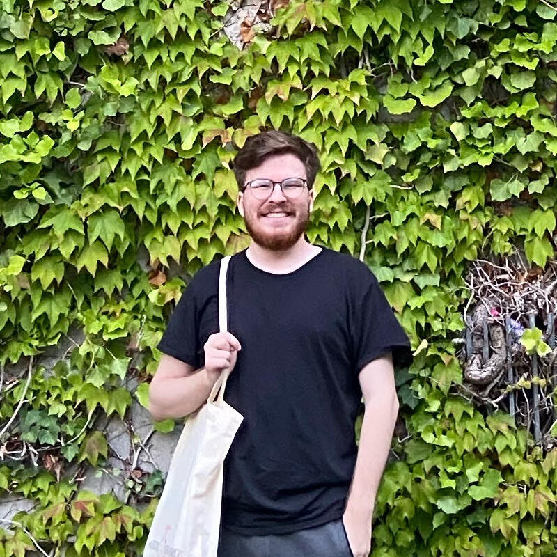

© Jack Sebben 20XX. All rights reserved.

Hi, I’m Jack Sebben, a Computer Science student at Rochester Institute of Technology. I have multiple years of experience in software development and game design. My expected graduation date is December 2025.
I enjoy pursuing other related fields of study, such as mathematics or robotics. With math, I’ve been passionate through the time I competed on my school’s math team. A solid placing at regionals my senior year landed our team at state. Around the same time, my robotics teams also went to state with me as the lead programmer. I’ve always been interested in automation, and would love a future hobby or opportunity in the field. I enjoy programming games in my free time, typically small demos or projects I’ve made alongside friends. As a personal hobby, I’ve been learning the German language for about a year now. Last summer, I visited the country as a study abroad for my degree, which was an entirely new and exciting opportunity for me.
If you are interested in hiring, or simply want to get in contact, you can shoot me an email at johnjacksebben@gmail.com.
Discovery Machine Inc.
Hit the griddy
C Speed
Hit the griddy
Pixit
Originally, I was brought on as a software intern for L Street Corporation. One of the company’s subsidiaries, Pixit, is a lost and found web application. After a sudden disappearance of the main developer (not kidding), I stepped into the role of sole maintainer of the codebase. The application was built with Ruby on Rails, which I had only played with before. A little self-teaching later, I resolved several critical bugs persisting for over a month. I continued working primarily for Pixit, fixing bugs for the few months of my internship. This was also the first time I had used Git in a professional setting, which helped with maintaining the code. I had to adapt quickly and troubleshoot unfamiliar issues, but I delivered.
Academic and personal projects go here.